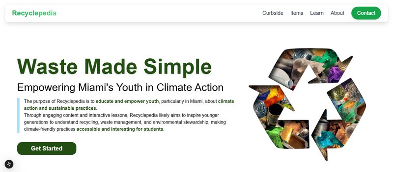
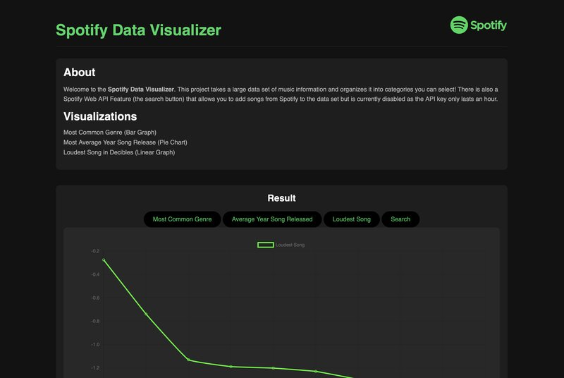

Computer Science student at Florida International University (Dec 2026), previously a Software Engineer Intern at Vanguard and a Google Tech Exchange student. I love building software for social good. Outside of work you'll find me watching video essays, at the gym, or traveling.
Tools I reach for, from proficient to familiar.
Where I've worked and taught.
Things I've built, mostly with friends, mostly for good.
Led a team of four at PennApps building a wearable + mobile app that monitors UV exposure and delivers AI-powered, skin-tone-aware skincare recommendations with real-time sensor integration.
Built cogs for the INIT Discord bot that query a Notion knowledge base for instant answers, plus a closed-loop support system routing students to the right support member.

Led a team of 12 with Miami-Dade County to redevelop the Recyclepedia site and companion iOS/Android apps, bringing in 200 new active monthly users.

Created and led a project teaching web fundamentals by turning a music dataset into interactive charts.
Led a team building a route-planning tool that notifies users of commute times based on desired thresholds.
Communities and programs that shaped how I build.
Lead in-person workshops for a 10,000+ member club on modern frameworks and the full project lifecycle, mentoring members through hands-on builds.
Selected for a competitive semester-long program with classes led by Google engineers on full-stack development and industry best practices.
Selective 18-month professional development program for high-achieving diverse talent, growing leadership and technical skills.
Immersive technical training in Node.js, JavaScript, and CLI tooling, with a focus on teamwork and mentorship.